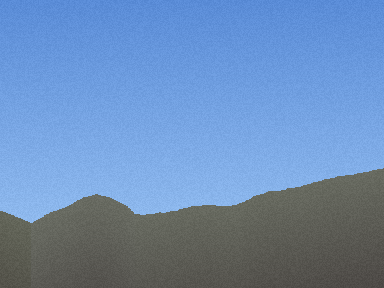

Zaginiony wysłał rodzinie zdjęcie z gór. Pokazujemy, jak jedno zdjęcie zawęża obszar poszukiwań na Zawracie.

Czas liczenia ok. 6,5 s na laptopie. Na mapie: 5 najlepszych kandydatów i stożek widoku (FOV 65°) z kandydata nr 1.
Gdy telefon zapisał GPS, zdjęcie to po prostu punkt z godziną i dokładnością - trafia do mapy jak każdy inny ślad. Uwaga: komunikatory często usuwają EXIF, dlatego potrzebny jest tryb bez GPS.